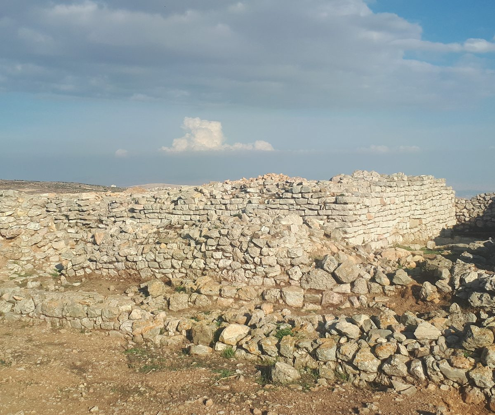

Deuteronomio 13 — La Traducción Mister

⭐ Esto es en lo que el versículo 17 sentencia a convertirse a un pueblo. La pena final del capítulo es que el lugar sea un tel olam, un montón para siempre, nunca reconstruido — y esas dos palabras están en un solo versículo más de la Biblia hebrea, Josué 8:28, sobre Hai. Este es et-Tell, el campo de ruinas al este de Betel que esta biblioteca, siguiendo la opinión mayoritaria, identifica con Hai. ⚠ Esa identificación es la habitual pero está realmente discutida: la propia página de Commons que aporta la fotografía la matiza, y se ha defendido en su lugar Khirbet el-Maqatir; la datación de lo excavado aquí frente al relato de la conquista es un problema antiguo y no un punto resuelto. ⭐ Vale la pena saberlo en vez de esconderlo, porque afila lo que Josué 8:28 afirma: que Hai quedó hecha un montón hasta el día de hoy — una frase sobre un montón que ya era viejo. ⚠ Lo que muestra la fotografía no es el montículo visto desde fuera, sino su cima: hiladas de piedra seca de pocos cursos y el derrumbe de su caída.
_ruins.jpg){kind=link}
★ En hebreo este capítulo empieza con la frase que casi todas las Biblias acaban de imprimir como último versículo del capítulo 12. El texto masorético la numera 13:1. Los trece testigos de los dos estantes la numeran 12:32 —comprobado recogiendo ese versículo de cada uno de ellos, y confirmando que el 13:1 de cada uno es el profeta de nuestro v2—, de modo que de aquí al final del capítulo cada número de esta página va uno por delante del número del estante. Deuteronomio 12 ya avisó de ello al pasar.
★ La tradición escribal separa el versículo de los dos lados, que es justamente por lo que las dos tradiciones pudieron dividirse aquí. En este capítulo caen cuatro marcas de párrafo. La de después de este versículo es {פ}, una marca ABIERTA, la más fuerte de las dos que usan los masoretas; las otras tres, tras v6, v12 y v19, son {ס}, cerradas. La división más pesada del capítulo es, pues, la línea inmediatamente posterior a v1: los escribas no unieron esta frase ni a lo anterior ni a lo siguiente. Las otras tres caen exactamente en las fronteras de los tres casos.
★★ Deuteronomio 4:2 ya dio esta orden, y las dos están en números gramaticales distintos. Allí es lo tosifu … ve-lo tigre’u, plural. Aquí es lo tosef … ve-lo tigra, singular. Los mismos dos verbos, el mismo orden, el mismo objeto; solo se mueve el número —lo que hace de este el dato más limpio hasta ahora para la pregunta que este libro arrastra desde el capítulo 9. Y este versículo cambia dentro de sí mismo: la oráción inicial, «eso guardarán» (tishmeru), es plural, y las dos prohibiciones que siguen son singulares.
★★ Y aquí el lector español tiene ventaja sobre el inglés. El inglés moderno solo tiene un «you», de modo que la NIV y The Living Bible no pueden marcar nada; el inglés antiguo lo marca con un pronombre muerto hace cuatro siglos (ASV ‘that shall ye observe to do: thou shalt not add’, y lo mismo la KJV y Ginebra). La RV 1909 lo hace en una lengua viva: «Cuidaréis de hacer todo lo que yo os mando: no añadirás á ello, ni quitarás de ello». ⚠ La RV60 lo pierde y lo aplana todo al singular —«Cuidarás de hacer todo lo que yo te mando»—, que es la brecha de la Reina-Valera que los capítulos 10, 11 y 12 han venido midiendo, moviéndose una vez más. La TNM 1987 y la NVI tampoco lo marcan, cada una desde un extremo: la primera lo pone todo en plural, la segunda todo en singular.
⚠ Uno de los dos verbos es una palabra de la cuota de ladrillos. Gará, disminuir o quitar, está en el plural negado lo tigre’u en exactamente tres versículos de la Biblia hebrea: Éxodo 5:8, 5:19 y Deuteronomio 4:2. Los dos primeros son de Faraón, sobre la cuenta de ladrillos. No es una cita y esta nota no dice que lo sea —es un verbo corriente haciendo un trabajo corriente en los dos sitios—. Pero la fórmula que se le da a Israel para su propia ley es una que un israelita había oído por última vez de boca de un capataz.
⚠ Y el aparato de la propia NWT falla donde acierta el inglés antiguo. La NWT 1984 marca el plural con versalitas y usó ese recurso por todo Deuteronomio 12. Aquí imprime ‘YOU must not add to it’ —versalitas, plural— donde el hebreo ya ha pasado al singular. El único testigo construido para mostrar el cambio es de los que lo pierden.
★ El caso más difícil del capítulo es el primero, y lo duro es que la señal se cumple. El v3 no dice «si la señal falla». Dice u-va ha-ot ve-ha-mofet: y VIENE la señal o el portento. La ley concede el milagro y luego lo declara irrelevante, que es una prueba distinta de la que dará Deuteronomio 18:22, donde a un profeta se le juzga por si su palabra se cumple. Aquí se cumplió, y aun así se le rechaza. Lo que decide no es el poder sino la dirección de la frase que se le adjunta: «vayamos tras otros dioses».
La razón que se da es una prueba. Ki menasseh YHVH eloheikhem etkhem: Jehová su Dios los está poniendo a prueba. Es el verbo usado de Abrahán en Génesis 22:1 (todavía no en español) y del desierto en Deuteronomio 8:2, donde lo que probaba a Israel era el hambre. Aquí el instrumento de la prueba es un milagro que funcionó.
★★ Tres veces se cita en este capítulo a alguien diciendo «vayamos y sirvamos a otros dioses, que no has conocido», y el número de ese «tú» no es el mismo en las tres. En v3 el profeta se lo dice a una persona: yeda’tam, singular. En v7 el pariente se lo dice a una persona: yada’ta, singular. En v14 los malvados se lo dicen a un pueblo entero: yeda’tem, plural. El número dentro de las comillas sigue al auditorio de quien habla, no a quién se dirige Moisés. Es la lectura de Deuteronomio 11 llegando por otro camino: la costura es una comilla, y aquí está literalmente dentro de una.
★ Cuatro testigos lo confirman por su cuenta. La ASV lee ‘which thou hast not known’ en su 13:2 y ‘which ye have not known’ en su 13:13; la KJV y Ginebra imprimen el mismo par, y la Douay lo hereda del latín. ⚠ El estante español no lo marca aquí: la RV60 pone «que no conociste» y «que vosotros no conocisteis», lo cual sí distingue, pero la NVI y la TNM 2019 pierden la diferencia en una de las dos.
★ Contado forma por forma, este es el único versículo enteramente plural del capítulo. Trece de los diecinueve son enteramente singulares; cinco cambian dentro de sí mismos (vv1, 4, 6, 8 y 14); y solo este no lleva ninguna forma singular. También tiene la lista de verbos más densa —andarán, temerán, guardarán, escucharán, servirán, se aferrarán—, cada uno con su objeto delante, que es por lo que el texto de arriba dice «a él temerán» y no «temerán a él».
★ El último de los seis es el verbo que este libro viene escalando. Davaq, aferrarse, es la palabra del matrimonio en Génesis 2:24 (todavía no en español). ⚠ Deuteronomio 4:4 ya lo apunta a Dios —«ustedes, los que se aferran a Jehová su Dios, viven»— pero como PARTICIPIO que describe un estado, no como orden. Donde se MANDA, este es el tercero: 10:20, uno de cuatro deberes; 11:22, con una promesa condicional colgando; y aquí, el último de una lista de seis. ⚠ Vuelve al final del capítulo, en v18, apuntando al revés; véase la nota de allí.
En el estante este versículo mide cuánta repetición tolera un traductor. La TNM 1987 conserva los seis y casi toda la anteposición —«Tras Jehová su Dios deben andar, y a él deben temer»—; la RV 1909 también, con su «á él os allegaréis» al final; y la NVI lo rompe en imperativos cortos —«Cumple sus mandamientos y obedécelo; sírvele y aférrate a él»—, que se lee mejor y convierte un redoble de seis en prosa corriente.
★ La acusación son dos palabras, y se convierten en jurisprudencia. Sarah es un sustantivo de la raíz de apartarse —defección, rebelión— y dibber sarah es la acusación formal. Leído contra toda la Biblia hebrea, el sustantivo está en solo dos versículos de la Torá, este y Deuteronomio 19:16. ★ Y los dos profetas condenados con esas mismas palabras están los dos en Jeremías: Ananías en Jeremías 28:16 y Semaías en Jeremías 29:32, los dos ya en estas páginas. Este capítulo es el estatuto; esos dos son los únicos procesos con acusado.
★ El verbo que recorre los tres casos aparece aquí por primera vez. Nadach en causativo es sacar a alguien del camino por el que iba. Es lo que hace el profeta (v6), lo que hace el pariente (v11, la palabra idéntica) y lo que hacen los malvados con un pueblo entero (v14) —una vez por caso, y los tres casos no comparten nada más que su objeto.
«Quemarás el mal de en medio de ti» empieza aquí. U-viarta ha-ra mi-kirbecha es una fórmula: está en nueve versículos de la Biblia hebrea, todos en Deuteronomio, y este es el primero. ⚠ El verbo es el corriente para un fuego que consume, por lo que esta traducción pone «quemarás» donde la RV 1909 y la RV60 ponen «quitarás el mal». Los léxicos discuten si hay una segunda raíz que significa pacer o dejar rapado, así que el fuego no es seguro y no se afirma que lo sea.
★★ El versículo cambia de número dentro de una sola oración de relativo, y solo tres de los trece ponen la costura donde la pone el hebreo. El hebreo dice «Jehová el Dios de ustedes[PL], que los sacó[PL] de la tierra de Egipto y te redimió[SG] de la casa de esclavos». Exactamente ahí: la ASV, la NWT 1984 y la TNM 1987 («que los ha sacado … y te ha redimido»). Una oración tarde: la KJV, Ginebra y Douay. Una oración pronto: la RV 1909 y la RV60, ambas «Jehová vuestro Dios, que te sacó». Y cinco no lo marcan.
⚠ Las dos revisiones lo aplanan en direcciones OPUESTAS, y eso es nuevo. La NWT en su revisión de 2013 pone un «you» llano en todo el versículo; la TNM en su revisión de 2019 va al otro lado y lo pone todo en plural —«los sacó … los rescató … apartarlos»—. La misma casa, la misma década, el mismo versículo, y la información se pierde dos veces moviéndose en sentidos contrarios. Con v4 y v8, que hacen lo mismo, este capítulo aporta seis casos al recuento que este proyecto lleva desde Deuteronomio 6: treinta y tres antes, treinta y nueve ahora.
★ La lista está montada para la máxima dificultad, y no es un simple árbol genealógico. Hermano, hijo, hija, esposa, amigo —pero el hermano se especifica como ben immecha, el hijo de tu madre, que en una casa donde un padre podía tener varias mujeres nombra al hermano más cercano y no al meramente legal. Luego eshet cheikecha, la mujer de tu seno —esa frase con ese sufijo no aparece en ningún otro versículo de la Biblia hebrea— y re’acha asher ke-nafshecha, tu amigo que es como tu propia alma. ⚠ La lista tiene además un hueco fácil de pasar por alto: no está en ella ninguno de los dos progenitores. Se nombra a una madre, pero solo para precisar de qué hermano se habla; ni el padre ni la madre aparecen como alguien que pudiera hacer la incitación.
La fórmula de la amistad es la que Samuel usa para Jonatán. «Como su propia alma» es como 1 Samuel describe el amor de Jonatán por David, tres veces en los capítulos 18 y 20, todavía no en estas páginas. Aquí esa misma medida de cercanía funciona como agravante legal: cuanto más cerca el tentador, con más detalle se escribe el procedimiento.
⚠ Cuatro verbos de negativa, y el cuarto es el que hace que el versículo no se lea como algo meramente antiguo. No consentirás, no escucharás, no le tendrá lástima tu ojo, no perdonarás —y lo techasseh alav, no lo encubrirás. Lo que se legisla en v9 es el encubrimiento: el caso arranca de alguien que preferiría proteger a un hermano antes que denunciarlo, y la ley nombra ese impulso antes de prohibirlo.
«Tu mano será la primera contra él.» El v10 pone al denunciante a la cabeza de la ejecución. Es una regla procesal y no una figura retórica, y su efecto es encarecer la acusación para el que acusa. ⚠ La misma fórmula vuelve en Deuteronomio 17:7 con una palabra cambiada, y el cambio es lo importante: allí la primera mano es la de los testigos, y aquí la de la persona a la que se abordó. ⚠ Es uno de los pasajes que la ley judía posterior más trabajó para volver inaplicable; eso es un hecho sobre la recepción del texto, no sobre el texto, y esta nota no pone esa reticencia en boca de Deuteronomio.
En el estante la divergencia está en cuánta familia deletrear. La RV 1909 conserva cada aposición —«tu hermano, hijo de tu madre»— y la RV60 comprime la esposa a «tu mujer» perdiendo el seno; la NVI pone «tu esposa amada», que traduce el afecto y no la imagen. ⚠ The Living Bible, que es inglesa, disuelve la lista entera en ‘your nearest relative or closest friend’ —tu pariente más cercano o tu amigo más íntimo— y además funde versículos, así que cualquier recuento de lo que dicen «las versiones» en un versículo dado de este capítulo tiene que contar con un testigo que ha dejado de separarlos.
★ Este es el primer caso de beliyaal en la Biblia hebrea. Buscado en todo el texto, la palabra está en veintiséis versículos, y solo dos de ellos en la Torá: este y Deuteronomio 15:9. Los otros veinticuatro se reparten en diez libros: seis en 1 Samuel, cuatro en 2 Samuel, tres en los Salmos y tres en Proverbios, dos en Jueces, dos en 1 Reyes y dos en Nahúm, y uno en Job y otro en 2 Crónicas.
La palabra es probablemente un compuesto, y esta traducción la traduce en vez de transcribirla. Beli-ya’al se lee con naturalidad como «sin provecho», y el estante se parte por ahí: la KJV y la Douay la mantienen como nombre propio, la RV 1909 pone «hijos de impiedad», la RV60 «hombres impíos», la NVI «hombres perversos» y la TNM 1987 «unos hombres que no sirven para nada», que es la más literal del estante español. ⚠ Tratarla como nombre propio es un desarrollo posterior, reflejado en los Rollos del Mar Muerto y en el Nuevo Testamento; nada en este versículo lo exige.
★★ Antes de tocar el pueblo, tres verbos de indagación —y el primero es el verbo que el capítulo anterior mandó y prohibió. Ve-darashta ve-chaqarta ve-sha’alta heitev: indagarás, e investigarás, y preguntarás —a fondo—. Deuteronomio 12 cerró observando que darash se manda en su v5 y se prohíbe en su v30, y dijo que el capítulo siguiente volvería a tomarlo. Lo hace, y en un tercer sentido: aquí no es culto ni apostasía sino averiguación judicial. La misma palabra, su tercer objeto distinto en tres apariciones.
El verbo del medio es palabra de tribunal en otros sitios. Chaqar es prospectar, reconocer un país, llegar al fondo de una causa; el sustantivo que sale de él es el fondo de una cosa. Poner tres casi sinónimos en fila y añadirles heitev, «bien, a fondo», es la manera que tiene este capítulo de decir que lo que llega en el v13 es un rumor y que nada puede seguirse de él mientras siga siéndolo. ⚠ La severidad de lo que viene después es exactamente la razón de que la frase anterior trate de pruebas.
★★ La palabra que se usa sobre este pueblo es la que se usa sobre los cananeos. Cherem, el anatema, es lo que Deuteronomio 7:2 manda contra las naciones de la tierra. Aquí se vuelve contra una ciudad de Israel. Es el movimiento más severo del capítulo y se hace con vocabulario y no con argumento: no se dice que el pueblo se haya vuelto cananeo; la ley simplemente echa mano de la palabra cananea.
★★ «Será un tel para siempre» —y esa frase está en exactamente dos versículos de la Biblia hebrea. Este, y Josué 8:28, sobre Hai (cuya ficha de la enciclopedia y su mapa todavía no están en español). Buscado consonante por consonante en todo el texto, no hay un tercero. Así que la sentencia que Deuteronomio dicta sobre un pueblo israelita apóstata es, palabra por palabra, la que Josué ejecuta sobre uno cananeo. ★ Tel nunca se volvió arcaica: es el Tel de Tel Meguido y de Tel Aviv, y sigue siendo como los arqueólogos llaman a los montículos que excavan.
★ La primera y la última orden del capítulo son el mismo verbo, apuntando al revés. V5: u-vo tidbaqun, y a él se aferrarán. V18: ve-lo yidbaq be-yadcha me’umah, y nada se pegará a tu mano. Aférrate a Jehová; que no se te pegue nada de lo anatematizado. Son sus dos únicas apariciones en el capítulo.
★ La última línea paga la deuda que dejó abierta el capítulo 12. La fórmula ha-yashar be-einei YHVH, lo recto a los ojos de Jehová, se acuñó en 12:25 y 12:28 como respuesta a «cada uno lo que sea recto a sus propios ojos». ⚠ El capítulo 12 reportó que la KJV y Ginebra conservan los ojos en el diagnóstico y los pierden en la cura. En este versículo las dos imprimen los ojos, así que lo que parecía una política quince versículos atrás resulta ser una inconsistencia. La NVI hace lo contrario: conserva «a los ojos del Señor» en 12:25 y aquí aplana a «ante el Señor». ★ La Douay es la única consistente en perderlos, porque el latín que hay detrás dice quod placitum est.
⚠ Lo que el capítulo no hace. No da procedimiento para un pueblo que se arrepiente, ni apelación, ni tribunal —la investigación del v15 es el único control escrito en él—. Conviene decir sin rodeos que este es uno de los pasajes de la Biblia hebrea más citados, entonces y después, para autorizar matar por motivos religiosos, y que el texto da la cita sin los matices que le han puesto sus lectores posteriores. Catalogar eso es el trabajo de este proyecto; explicarlo para que desaparezca, no.
Notas sobre esta traducción
Decisiones. Beliyaal se traduce en vez de transcribirse —hijos de la nada, no «hijos de Belial»— porque la personificación es posterior a este versículo (n13-13). Sarah es rebelión (n13-6). Bi’er es quemar y no el «quitar» del estante, con la duda léxica dicha donde corresponde (n13-6). Nadach es apartar en sus tres apariciones, para que el único verbo que une los tres casos siga visible (n13-6). Y ha-yashar be-einei YHVH conserva lo recto a los ojos de Jehová igual que en 12:25.
★★ El texto en español de arriba lleva a propósito el número que lleva el hebreo, y por eso muestra lo que una página inglesa no puede. Donde el hebreo dice ustedes, arriba dice ustedes; donde dice tú, dice tú. Así el lector español ve directamente lo que las notas de la página inglesa tienen que explicar: el v1 que empieza en plural y termina en singular, el v5 enteramente plural, la costura a mitad de la oración de relativo en el v6, y la sola palabra plural del v8.
⚠ Cuatro marcas masoréticas de párrafo caen en este capítulo, y excepcionalmente marcan todas sus costuras: una abierta {פ} tras v1 y cerradas {ס} tras v6, v12 y v19 —comprobado versículo a versículo—. Dividen el capítulo 1 | 2–6 | 7–12 | 13–19: el versículo marco solo, luego el profeta, luego el pariente, luego el pueblo.
Ecos pagados. Deuteronomio 4:2, repetido aquí en el otro número (n13-1). Darash, mandado en 12:5 y prohibido en 12:30, retomado en v15 en un tercer sentido (n13-13). Ha-yashar be-einei YHVH, acuñado en 12:25 (n13-16). Davaq, tercera vez apuntando a Dios (n13-5). Y el cherem de 7:2, vuelto aquí contra un pueblo de Israel (n13-16).
Ecos plantados. U-viarta ha-ra mi-kirbecha, por primera de sus nueve veces, todas en este libro (n13-6). Beliyaal, entrando en la Biblia en v14 (n13-13). Tel olam, cuya única otra aparición es Josué 8:28 sobre Hai (n13-16). Y dibber sarah, cuyas dos condenas con nombre están en Jeremías 28 y 29, ya en estas páginas (n13-6).
Biblioteca. Cinco términos nuevos del diccionario en los dos idiomas —nadach, bi’er, sarah, tel y yasaf—, y cuatro entradas existentes ampliadas en vez de duplicadas. Ninguna entrada nueva de enciclopedia: este capítulo no nombra a nadie ni ningún lugar.
Siguiente entrega de este libro: Deuteronomio 14 —que pasa del pueblo que hay que quemar a lo que se puede comer, y repite un capítulo entero de otro libro, los animales limpios e inmundos de Levítico 11, en otro orden y más corto, con una lista de caza permitida que Levítico no tiene. Empieza prohibiendo dos prácticas de duelo y llamando a Israel hijos de Jehová, cierra con el diezmo y el levita y el extranjero, y contiene las tres palabras más discutidas de cualquier frase sobre comida de la Biblia: no cocerás un cabrito en la leche de su madre.